Tapedo · instrukcja
Mów w biegu - Tapedo rozpisze to na karteczki
Tapedo to dyktafon na Androida, który z tego, co powiesz, robi osobne karteczki: notatki, listy do odhaczania, zadania z terminem, wydarzenia, pomysły i listy zakupów podzielone na działy sklepu. Działa bez konta i bez internetu, a karteczki zostają tylko w Twoim telefonie.
Zrzuty ekranu pochodzą z wersji 1.9 z wymyślonymi karteczkami. Przy zrzutach są żółte numery - pod nimi lub obok opisane jest, co jest pod każdym numerem.
Spis treści
1
Pierwsze uruchomienie
Przy pierwszym uruchomieniu Tapedo pokazuje pięć podpowiedzi „Pierwsze kroki”. Reszta ekranu jest przyciemniona, a żółty marker zakreśla to, o czym mowa: czerwony klawisz, przekładki, pudełko z karteczkami, priorytety i ustawienia.
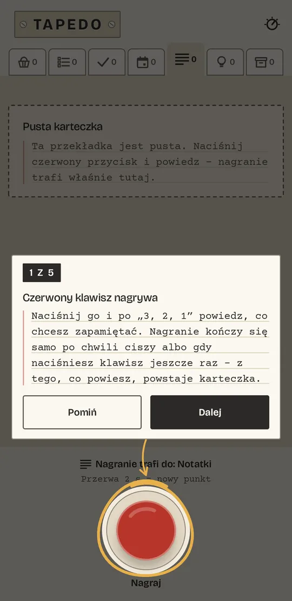
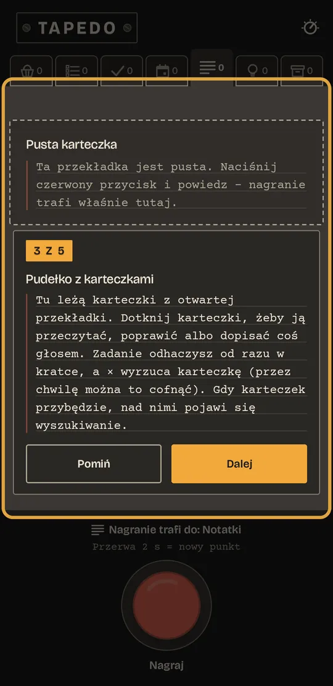
- Dalej przechodzi do następnej podpowiedzi, na ostatniej jest Zaczynam.
- Pomiń zamyka wszystkie podpowiedzi od razu.
- Przycisk Wstecz telefonu cofa do poprzedniej podpowiedzi, a na pierwszej je zamyka.
- Z klawiaturą: strzałka w prawo - dalej, strzałka w lewo - wstecz, Esc - pomiń.
Podpowiedzi pojawiają się tylko raz. Żeby zobaczyć je znowu, otwórz Ustawienia → O aplikacji i naciśnij Pokaż pierwsze kroki. Przy włączonym „Ogranicz animacje” marker i strzałka pojawiają się od razu, bez rysowania.
Przy pierwszym nagraniu Android zapyta o dostęp do mikrofonu - bez niego Tapedo nie usłyszy notatki.
2
Ekran główny
Ekran główny wygląda jak dyktafon z kartoteką: na górze przekładki pudełka, w środku karteczki, na dole czerwony klawisz.
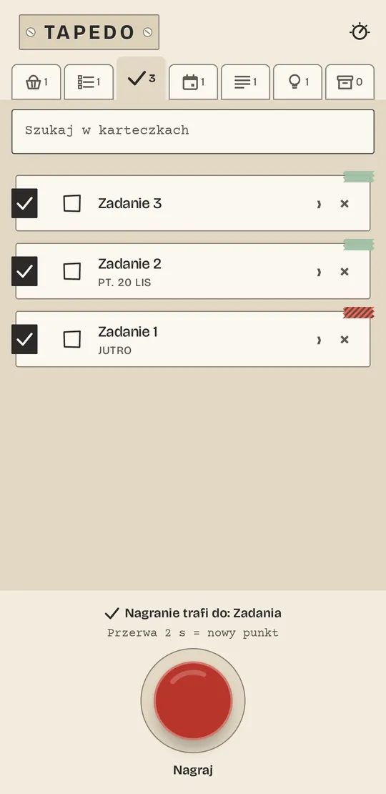
- Ustawienia (pokrętło) - patrz Ustawienia.
- Przekładki - zakupy, listy, zadania, wydarzenia, notatki, pomysły i „Zrobione”. Liczba obok znaku mówi, ile karteczek leży za przekładką. Dotknij przekładki, żeby ją otworzyć.
- Szukaj w karteczkach - pojawia się, gdy masz już jakieś karteczki.
- Kratka zadania - odhacza zadanie od razu, bez otwierania.
- Pasek karteczki - dotknij, żeby otworzyć karteczkę. Karteczki tego samego rodzaju są ponumerowane („Zadanie 1”, „Zadanie 2”), pod nazwą jest termin.
- × - wyrzuca karteczkę (przez chwilę można to cofnąć).
- Taśma w rogu - priorytet karteczki, patrz Priorytety.
- Nagranie trafi do: - przekładka, na którą trafi następne nagranie, a pod spodem przypomnienie, ile sekund przerwy robi nowy punkt listy.
- Czerwony klawisz - zaczyna i kończy nagrywanie.
3
Nagrywanie
- Otwórz przekładkę, na którą ma trafić karteczka, np. „Zakupy”. Nad klawiszem widać „Nagranie trafi do: Zakupy”.
- Naciśnij czerwony klawisz. Klawisz zapada się jak w magnetofonie, a na środku pojawia się odliczanie „3, 2, 1”. Pomyłka? Dotknij tarczy z cyfrą albo klawisza - nagrywanie się nie zacznie.
- Mów, gdy telefon krótko zadrga. Na pasku papieru milimetrowego pisak rysuje poziom głosu, a pod nim pojawiają się rozpoznane słowa. Ekran w tym czasie nie gaśnie.
- Przerwa robi nowy punkt. Gdy mówisz listę, zrób przerwę (domyślnie 2 sekundy) między punktami: „chleb … mleko … jajka”. Długość przerwy ustawisz w ustawieniach.
- Koniec. Nagranie kończy się samo po chwili ciszy (domyślnie 7 sekund), po ponownym naciśnięciu klawisza albo po przycisku Wstecz - to, co powiedziałeś, zostaje zapisane. Licznik pod klawiszem pokazuje czas, np. „0:12 / 1:00” - najdłuższe nagranie ustawisz w ustawieniach.
Słowa, które Tapedo rozumie bez AI
- „pilne”, „ważne”, „natychmiast” - wysoki priorytet; „kiedyś”, „bez pośpiechu” - niski.
- „jutro”, „pojutrze”, „w piątek” - termin zadania.
- „o 16”, „o 10:30” - godzina wydarzenia. Miejsce wydarzenia rozpoznaje AI, a bez AI wpiszesz je w karteczce.
- Zakupy same dzielą się na działy sklepu: warzywa i owoce, pieczywo, nabiał, napoje i inne.
Pytanie o rozpoznawanie przez internet
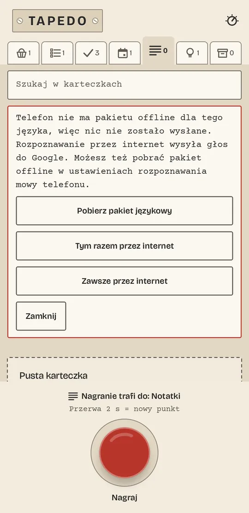
Tapedo najpierw rozpoznaje mowę w samym telefonie. Jeśli telefon nie ma pakietu językowego offline, nic nie zostaje wysłane, a Tapedo pyta:
- Pobierz pakiet językowy - otwiera ustawienia rozpoznawania mowy telefonu. Po pobraniu głos nigdy nie wychodzi z telefonu.
- Tym razem przez internet - tylko to jedno nagranie idzie do rozpoznawania Google.
- Zawsze przez internet - od teraz bez pytania (zmienisz to w Ustawieniach → Nagrywanie).
- Zamknij - nic nie nagrywa.
4
Okno po nagraniu
Po nagraniu karteczki są już zapisane. Okno pokazuje, co z nagrania wyszło - możesz to poprawić, nagrać więcej albo wyrzucić.
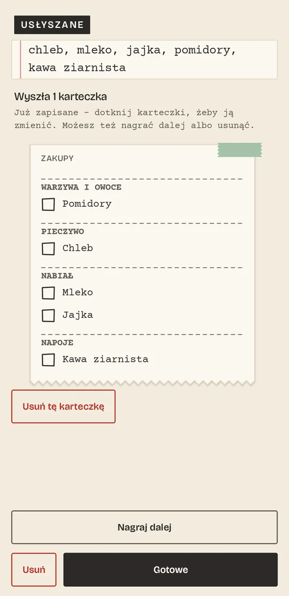
- Usłyszane - tekst rozpoznany z nagrania.
- Karteczki - jedno nagranie może dać kilka karteczek (np. zadanie i listę zakupów). Dotknij karteczki, żeby ją zmienić.
- Usuń tę karteczkę - wyrzuca tylko tę jedną karteczkę.
- Nagraj dalej - dopowiedz resztę; nowe słowa dołączą do tego nagrania.
- Usuń - wyrzuca wszystkie karteczki z tego nagrania (po pytaniu „Na pewno usunąć?”).
- Gotowe - wraca do pudełka. Przycisk Wstecz robi to samo.
Gdy w ustawieniach masz klucz do Claude, w tym oknie jest też Dokładniej - Claude (ok. 2-3 gr): te same słowa idą jeszcze raz do Claude Sonnet 5.5, który trafniej dzieli je na karteczki. Obecne karteczki zostają, dopóki nie wybierzesz Zamień na te.
5
Karteczka
Otwarta karteczka zajmuje cały ekran. Piszesz na niej od razu - każda zmiana zapisuje się sama, nie ma przycisku „Zapisz”.
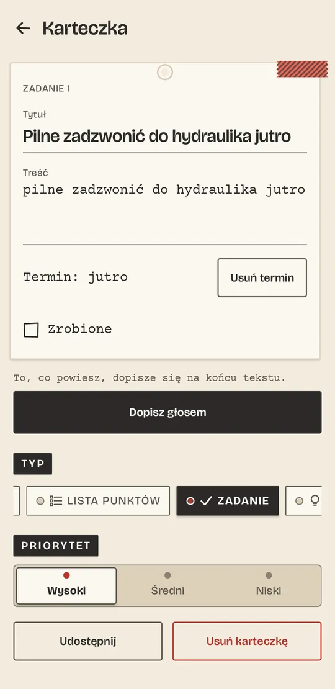
- Wstecz - wraca do pudełka (zmiany są już zapisane).
- Taśma priorytetu - kolor i wzór priorytetu.
- Tytuł - pierwszy wiersz karteczki.
- Treść - cały tekst; pisz w nim jak w zwykłym notesie.
- Termin (zadanie) albo data, godzina i miejsce (wydarzenie). Usuń termin zostawia zadanie bez daty.
- Zrobione - odhacza zadanie.
- Dopisz głosem - nagrywa i dopisuje słowa na końcu tekstu (albo jako nowe punkty listy). Zakończ dopisywanie kończy.
- Typ - zmienia rodzaj karteczki (np. notatka w listę); przesuń pasek palcem, żeby zobaczyć wszystkie.
- Priorytet - wysoki, średni albo niski.
- Udostępnij - wysyła tekst karteczki do innej aplikacji (SMS, komunikator, poczta).
- Usuń karteczkę - wyrzuca ją i wraca do pudełka, gdzie przez chwilę można ją przywrócić.
6
Listy i zakupy
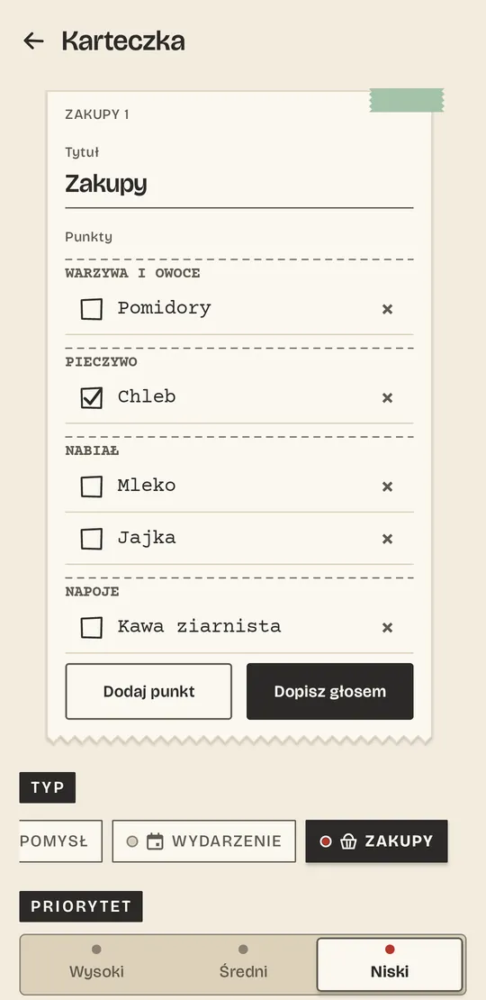
- Działy sklepu - zakupy same układają się w działy sklepu.
- Kratka - odhacza kupiony punkt.
- × - usuwa punkt z listy.
- Dodaj punkt - nowy punkt do wpisania z klawiatury.
- Dopisz głosem - powiedz, co dopisać, np. „masło i jajka”.
Zwykła lista (przekładka „Listy”, np. rzeczy do spakowania) działa tak samo, tylko bez działów sklepu. Na pasku w pudełku widać postęp, np. „1/5”.
7
Odhaczanie i „Zrobione”
- Zadanie odhaczysz kratką na pasku w pudełku albo kratką Zrobione w otwartej karteczce.
- Odhaczona karteczka przechodzi na przekładkę „Zrobione” (ostatnia, ze znakiem pudełka), a jej tytuł jest przekreślony ręcznie. Na dole ekranu pojawia się na chwilę pasek „Karteczka jest teraz na przekładce „Zrobione”” z przyciskiem Pokaż.
- Żeby przywrócić zadanie, otwórz „Zrobione” i odznacz kratkę - wróci na swoją przekładkę.
8
Usuwanie i „Cofnij”
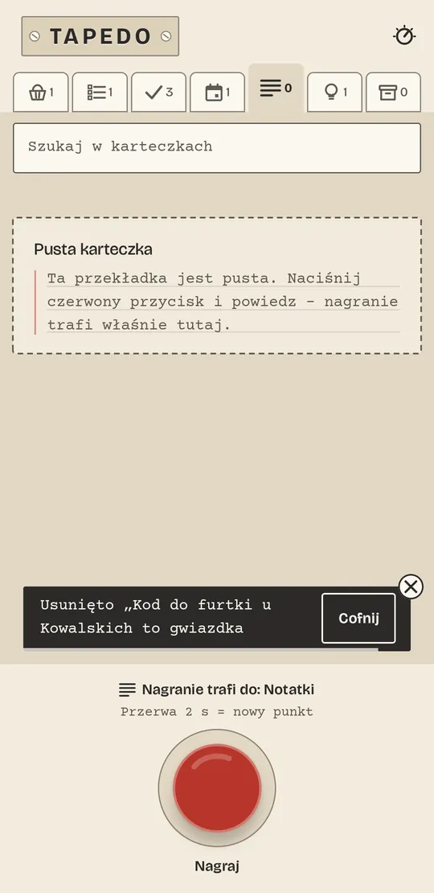
- Pasek „Usunięto …” - mówi, która karteczka wypadła z pudełka.
- Cofnij - przywraca karteczkę na miejsce.
- Kółko z × - zamyka pasek od razu.
- Linia czasu - kurczy się; gdy zniknie, pasek też (dłużej, gdy telefon ma w ułatwieniach dostępu ustawiony dłuższy czas na reakcję).
9
Priorytety
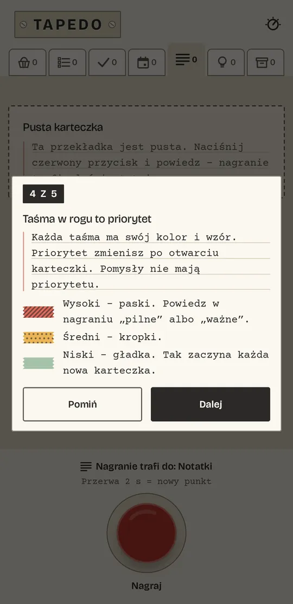
Taśma przyklejona w rogu karteczki to jej priorytet. Każdy priorytet ma inny kolor i inny wzór, więc rozróżnisz je także bez widzenia kolorów:
- Wysoki - czerwona taśma w paski. Powiedz w nagraniu „pilne” albo „ważne”.
- Średni - żółta taśma w kropki.
- Niski - zielona, gładka. Tak zaczyna każda nowa karteczka; „kiedyś” też daje niski.
Priorytet zmienisz w otwartej karteczce. Pomysły nie mają priorytetu.
10
Szukanie
- Otwórz przekładkę, na której chcesz szukać - szukanie działa w otwartej przekładce.
- Dotknij pola Szukaj w karteczkach i wpisz kawałek słowa. Lista zawęża się od razu; w tym czasie klawisz nagrywania chowa się, żeby było miejsce na wyniki.
- × w polu albo przycisk Wstecz czyści szukanie.
11
Ustawienia
Pokrętło w prawym górnym rogu ekranu głównego otwiera ustawienia. Są podzielone na cztery przekładki. Przy większości ustawień jest Wyjaśnij - rozwija krótki opis.
Nagrywanie
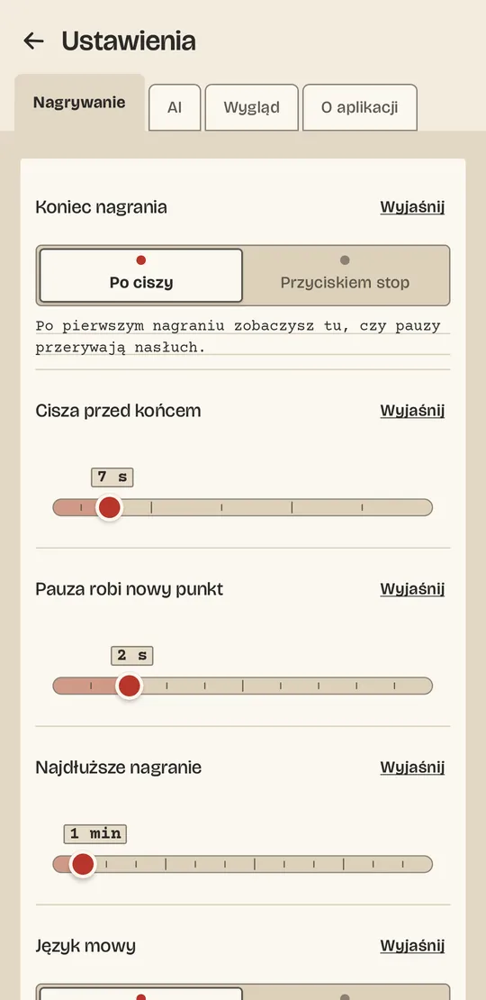
- Koniec nagrania - „Po ciszy” (nagranie kończy się samo) albo „Przyciskiem stop” (słucha, dopóki nie naciśniesz klawisza).
- Wyjaśnij - krótki opis ustawienia.
- Cisza przed końcem - po ilu sekundach ciszy kończy się nagranie (3-30 s, domyślnie 7).
- Pauza robi nowy punkt - ile sekund przerwy zaczyna nowy punkt listy (0-10 s, domyślnie 2). „Nigdy” - jedno nagranie to jeden punkt.
- Najdłuższe nagranie - zabezpieczenie, gdy zapomnisz zatrzymać (10 s - 60 min, domyślnie 1 min).
Niżej na tej przekładce: Język mowy (polski albo angielski) i Rozpoznawanie przez internet - „Pytaj” (domyślnie), „Zawsze” albo „Nigdy”.
AI
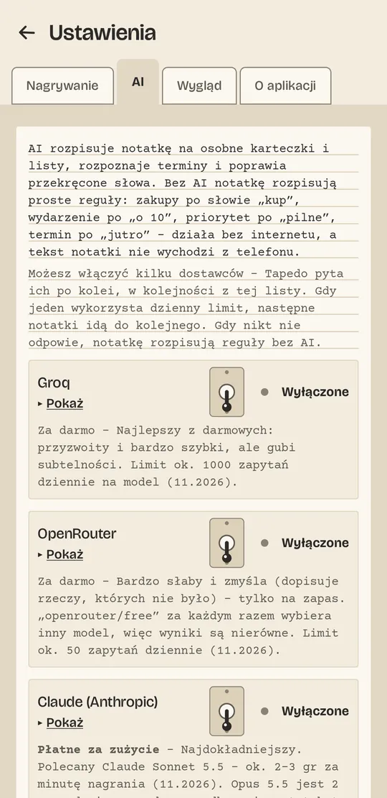
- Opis - co robi AI, a co proste reguły bez AI.
- Przełącznik dostawcy - włącza dostawcę AI. Można włączyć kilku - Tapedo pyta ich po kolei.
- Pokaż - rozwija instrukcję zdobycia klucza API, pole na klucz, wybór modelu i dzienny limit zapytań.
- Claude - płatny, najdokładniejszy. Możesz wpisać kwotę doładowania konta, a Tapedo policzy szacunkowe wydatki.
AI nie jest potrzebne. Bez niego karteczki rozpisują proste reguły w telefonie. Darmowi dostawcy to Groq i OpenRouter, płatni - Claude, OpenAI i Gemini. Przy każdym jest uczciwy opis, jak dokładnie działa. Klucz API wklejasz sam; zostaje zaszyfrowany w telefonie. Do dostawcy trafia tylko tekst notatki.
Na dole tej przekładki jest Whisper (domyślnie wyłączony): po „stop” nagranie idzie do Groq albo OpenAI i wraca przepisane dokładniej niż przez telefon. Wybór dostawcy Whisper to zgoda na wysłanie nagrania.
Wygląd
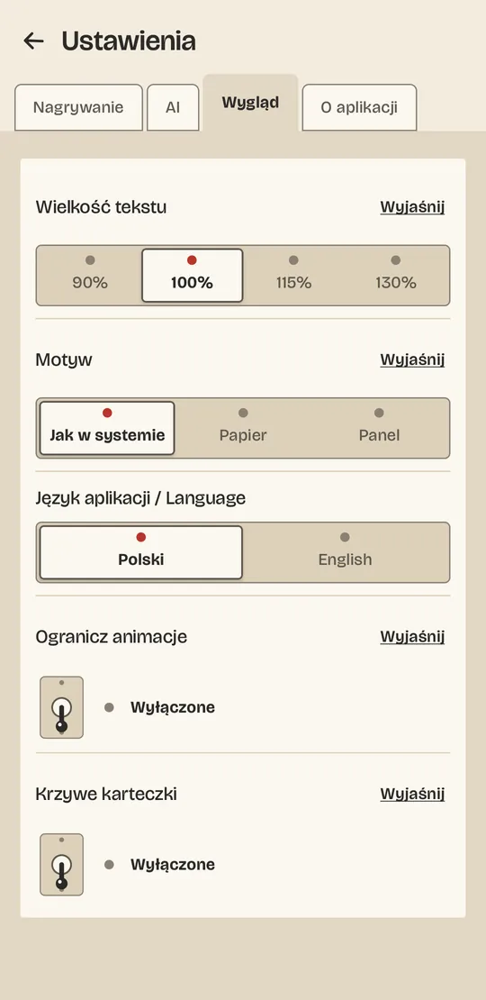
- Wielkość tekstu - 90-130%, dodatkowo do wielkości ustawionej w telefonie.
- Motyw - „Papier” (jasny, jak karteczka), „Panel” (ciemny, jak obudowa dyktafonu) albo jak w systemie.
- Język aplikacji - polski albo angielski.
- Ogranicz animacje - wszystko zmienia się od razu, bez ruchu. Włącza się też samo, gdy animacje są wyłączone w systemie.
- Krzywe karteczki - karteczki i taśmy leżą lekko krzywo, jak rzucone na biurko (domyślnie wyłączone).
O aplikacji
- Pokaż pierwsze kroki - podpowiedzi z pierwszego uruchomienia jeszcze raz.
- Kontakt z autorem i Wyślij błąd autorowi aplikacji - otwiera Twoją pocztę z gotową wiadomością (wersja, model telefonu, kod błędu - bez notatek i nagrań). Wysyłasz ją sam.
- Polityka prywatności, numer wersji i Licencje open source.
12
Prywatność w skrócie
- Karteczki są zaszyfrowane i zapisane tylko w tym telefonie. Nie ma konta ani serwera autora.
- Tapedo nie zapisuje dźwięku - zostaje sam tekst.
- Głos wychodzi z telefonu tylko za Twoją zgodą: przy rozpoznawaniu przez internet (do Google) albo przy włączonym Whisper (do Groq lub OpenAI).
- Przy włączonym AI do wybranego dostawcy trafia tylko tekst notatki.
- Bez reklam, statystyk i raportów o awariach wysyłanych w tle.
Pełna polityka: polityka prywatności Tapedo.
13
Gdy coś nie działa
- „Tapedo nie usłyszy notatki bez dostępu do mikrofonu” - naciśnij Otwórz ustawienia telefonu i zezwól na mikrofon.
- „Nic nie słychać” - naciśnij klawisz i powiedz jeszcze raz, bliżej telefonu.
- Brak pakietu offline - patrz pytanie o rozpoznawanie przez internet.
- AI nie odpowiada (brak sieci, limit, zły klucz) - karteczki i tak powstają, rozpisane przez reguły. W oknie po nagraniu widać powód.
- Błąd, którego nie da się naprawić samemu - w komunikacie jest Wyślij błąd autorowi aplikacji.